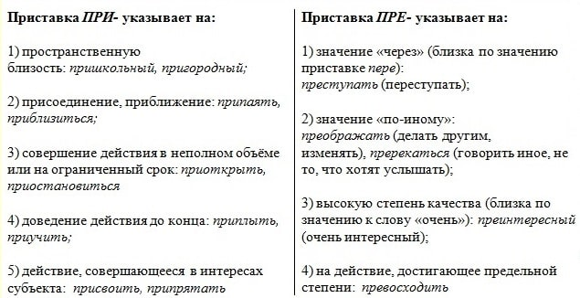

Приставки, которые пишутся одинаково:
а-, об-, под-, над-, пред-, о-, на-, по-, с-, про-, пра-.
Обтясать, предсказать, сбежать, надписать, оговорить, aморально.
Приставок оп-, пот-, нат-, прет-, з-, не существует.
Приставки на -з(перед звонкими согл.) и -с(перед глухим согл.): из-, ис-,
раз-, рас-, без-, бес-, чрез-, чрес-.
избежать, исписать, разболтать, рассказать, беззаботный, бессовестный, чрезмерный, чресчур.
И - Ы после приставок на согл. :
В корне слова буквы И меняется на Ы перед приставкой на согласный.
подЫтожить(Итожить), разЫскать(Искать),
безЫдейный(Идейный)
Исключение: сверх-, меж-,
дез-, контр-, пан-
СверхИнтересный, межИнститутский, контрИгра, дезИнформация, панИндийский.
Правописание приставок: пре- при-.

Ъ после приставки на согл. перед гласными е, ё, ю, я:
cъЁмка, предъЮбилейный, объЯвить